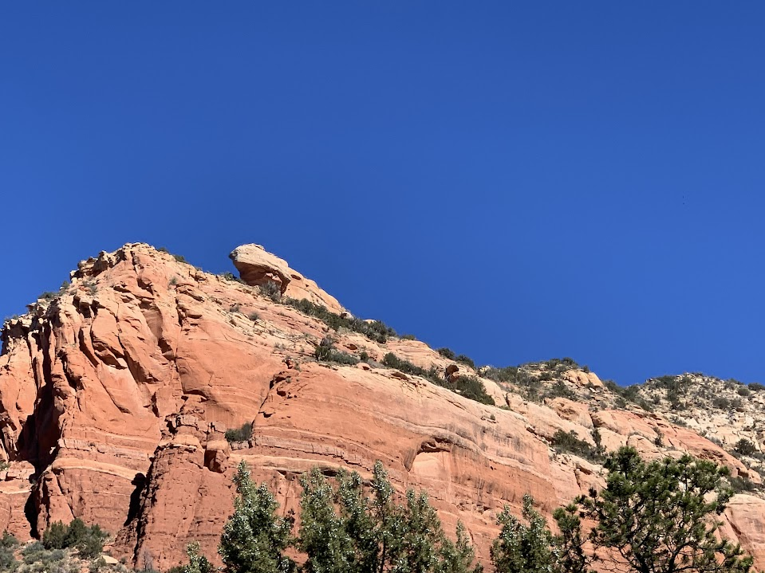
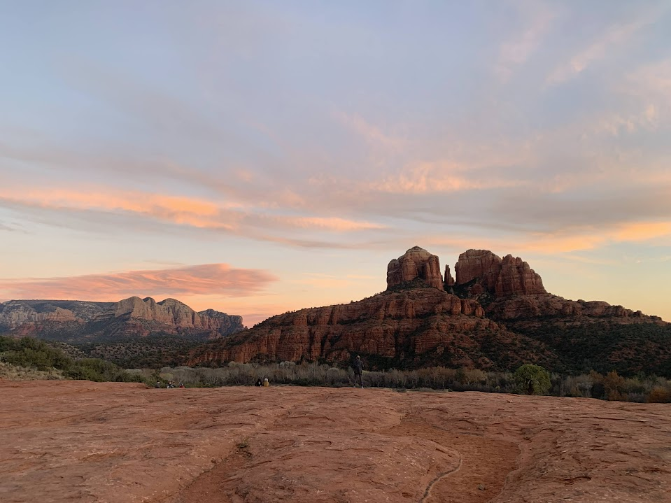
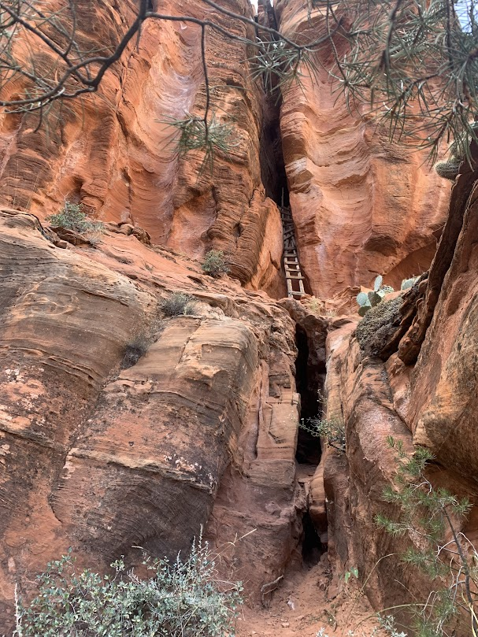

Top hikes i've done in Arizona
- Lizard Head  Located in Sedona, Arizona
- Cathedral view point  Located in Sedona, Arizona
- The Ladder  Ladder ruins located in Sedona, Arizona
Be prepared to scale some rocks. This hike includes a very steep incline to the point of having to do rock climbing almost. This make coming down a annoying but the hike is truly worth it.
Getting to the top allows you an expansive view of Sedona and other hikes you could do. You end up pretty much on the lizard head like rock.
Cathedral View point was a super short and easy hike. We did this hike so that we could take family pictures there. It has a beautiful view of Cathedral rock and the surrounding area.
We chose to go close to sunset and the setting sun lit up the red rocks. All in all this hike is super short but has a great view.
The Ladder is called this due to the old wooden ladder that is located at the end of the trail. This trial is not very well known and we were only able to find it thanks to having family who lived in Sedona to guide us.
Along with the ladder the Trail also includes Native American ruins. We are not totally sure what the area was used for but if the ladder weren't so old you could climb it and get to even more ruins and some Native wall art.